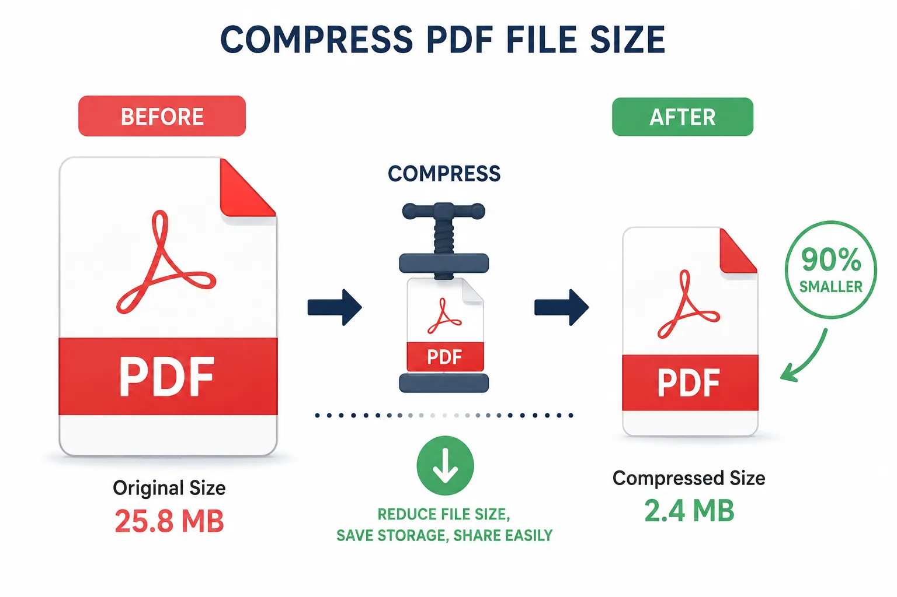
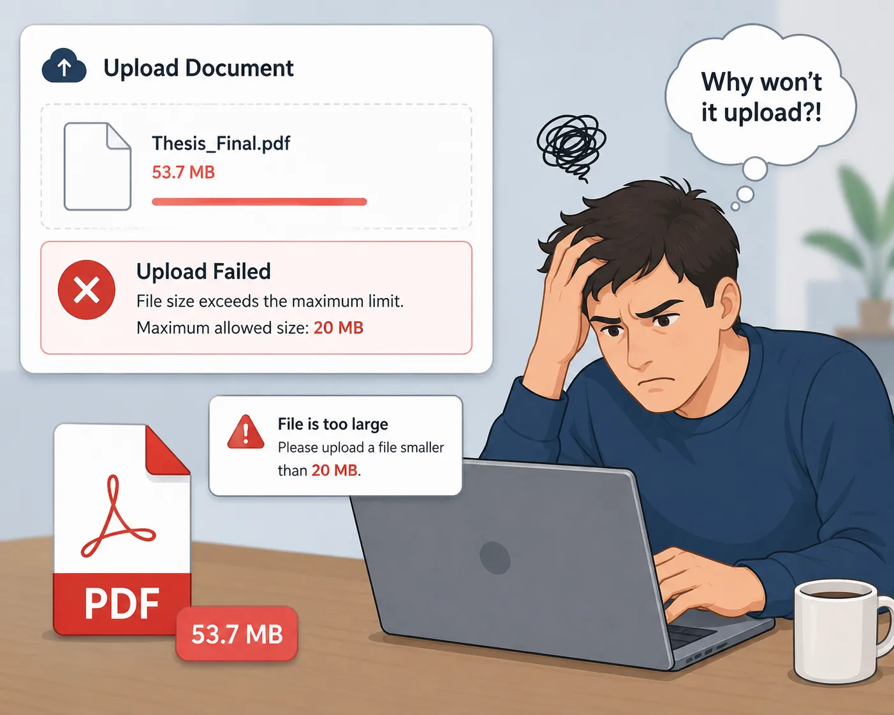

How to Compress PDF Files Online Easily — Complete Guide for Faster File Sharing
Discover the fastest way to reduce your PDF file size for easier sharing, faster uploads, and better storage management without losing quality.

Why Compressing PDF Is Important Now
Are you aware of how much PDFs are popular at the moment? They find usage in many business fields: business reports, school works, invoices, scanned documents, government forms, and many more.
But with the increased frequency comes a major drawback: PDF files are too large to be uploaded or shared in.
Examples: 20MB+ scanned doc, A report with all these images is too massive, Can't send gigantic attachments in popular email providers, Upload size in portals required by the government, Your mobile device is overloaded with big files.
That is, why compressing PDF files is important. Instead of dealing with bulky files, or compromising on quality yourself, a PDF compressor can package files in smaller size while preserving overall file quality and readability.
And the most convenient way to go about this is by using JKM Edit Home's Compress PDF Tool.
Unlike sophisticated paid tools and software, JKM Edit only relies on: Fast, User friendly, Browser based, No need to install.
What is a PDF Compression Tool?
A PDF Compression Tool is an online tool that can compress the file size of a PDF without significantly affecting the quality.
It achieves this by compressing these elements within the PDF file: The images in the PDF, The embedded fonts and data, The unnecessary metadata, The document structure and format.
For example: 25MB PDF → 5MB compressed file, Scanned PDF image → compressed readable PDF, Presentation PDF → compressed PDF ready to share.
Nowdays, most current tools offer lossless compression (small impact on the quality), lossy compression (maximum reduction on the size), browser based PDF compression, instant download, no-installation.
Nowadays, for the majority of the users, web-based tools are the ones commonly used because they are more efficient and don't need to install.
Common issues people experience without using PDF Compression Tool
1. Email Attachment Size Limit
The majority of the email providers restrict the file size which is attached to be 10MB-25MB. Most PDFs are big files, and the upload cannot happen, which make it impossible to send a large PDF via email. Needless to say it is actually very annoying, and also wastes up your time.
2. Slow file sharing
Cloud files sharing app and messenging app like WhatsApp etc. is really slow to upload, download and share large files. And this has huge impact on the productivity.
3. Mobile Storage
Many people experience storage issues in mobiles when they are scrolling PDFs, downloaded reports, and scanned images which is high in resolution.
4. Govt. portal restrictions
Many of the applications all over the internet require very small sized files, and imposing strict file size limits which might be 2MB and will reject the documents if they are more than the size specified above.
I might as well've used a fax machine, Jerry.

Why Do You Need Compression for PDFs?
Easy File Management
PDFs are easy to store, organize, share and archive.
Fast Sharing
Save bandwidth from email, WhatsApp, GoogleDrive, and other cloud applications.
Productivity Boost
No more repeatedly double uploading as file gets rejected. No more squeezing photos just to convert them to PDF.
More Mobile Friendly
Compressed PDFs are easier to handle, open and view on mobiles and tablet.
Why People Love Online PDF Compress Tools
PDF Compression software requires installing, takes up space, with graphicals to learn and, it crawls and crawls before upload for official work.
Online Software fixes all the above issues; current reading of instant grab; when you need it; it's browser based so you can use all your devices and can be done within days of being really fast either in browser and cloud.
How JKM Edit Fix Your PDF Compress Issues
1. Easy to Use
JKM Edit Compress PDF is intuitive. Upload a PDF; then compress & voila. JKM Edit isn't for people that think you need technical knowledge to use software.
2. Browser System
Works on both desktop, laptop, Android, IPhone and tablets. No need to install.
3. Supports fast processing
The program supports fast compress to provide users with time-saving.
4. Preserve Quality
The program compresses your file and keep its readability, format and document clarity.
5. Multi-file support
You can compress your huge reports, scanned documents, invoices, huge assignments, presentations and so on.
6. Free and open
Unlike other programs, JKM Edit is free and open because we want care the accessibility, use and premium issues.
Is Your PDF File Hard To Send?
Compress your file in seconds while keep its document clarity. Ideal for emails and uploads.
Compress PDF Now Free